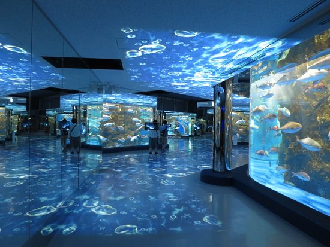
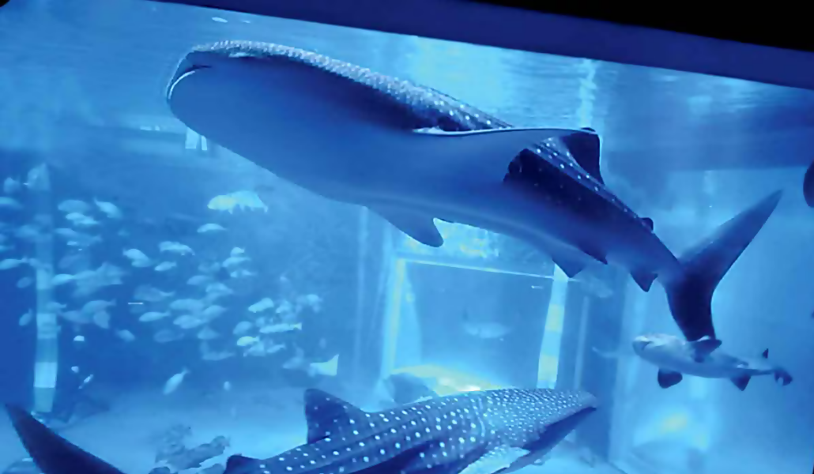
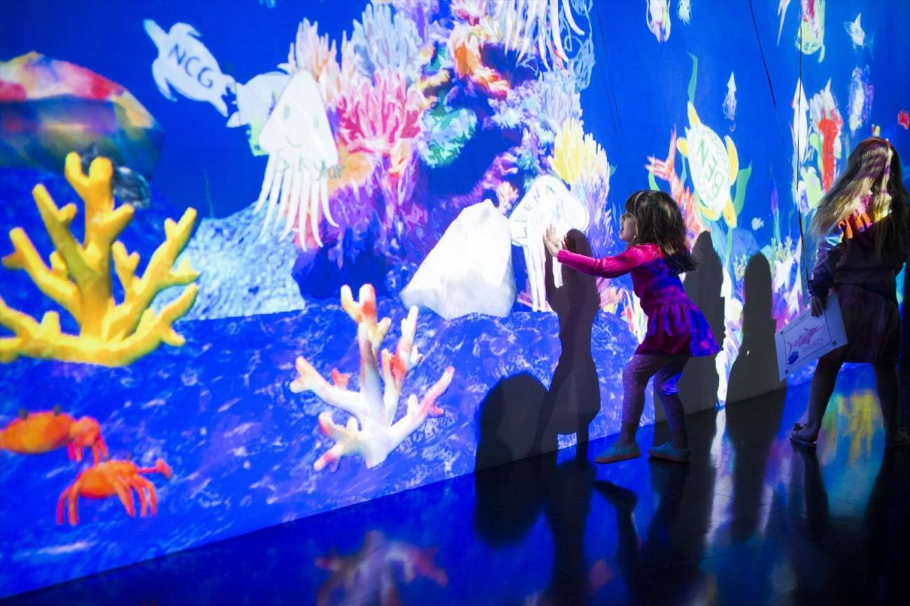
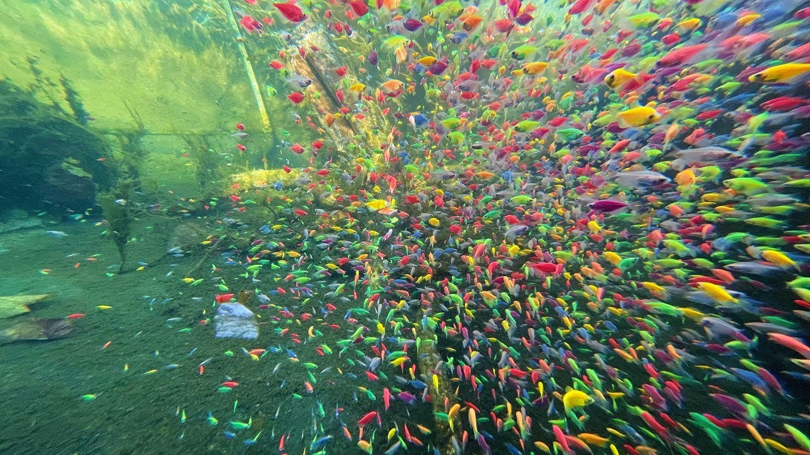
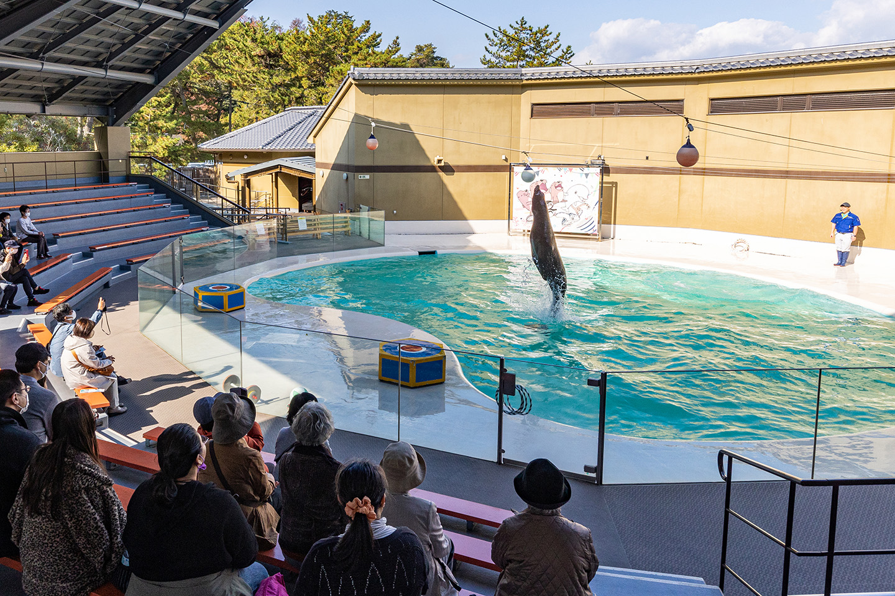
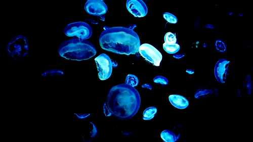
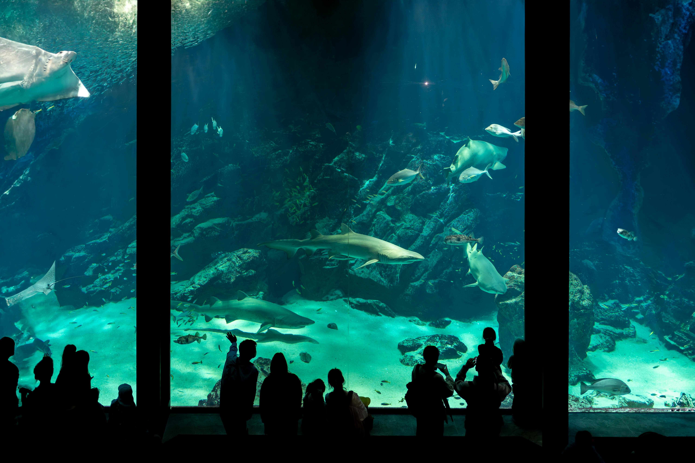

三年前、お母さんといっしょに日本へ行きました。そして、兄が(すいぞくかんへつ)れて行ってくれました。

すいぞくかんへ行いったことがありませんでした。 すいぞくかんは大きくてきれいですが、とおいですね。 入口のちかくにジンベエザメがいました。 たくさんしゃしんをとったことがあります。

あとで、すいぞくかんには魚を描くばしょがありました。 甥たちと一いっしょにきれいな魚さかなを描かいたことがあります。それから、女の人がスキャンをしてくれました。あとで、魚の絵ががめんに出るのを見たことがあります。

魚のショーがありましたが、おくれたから見みたことがありません。

でも、キョスケさんに会ったことがあります。キョスケさんはアシカです。 イルカとペンギンにも会ったことがあります

わたしの一番すきなすいぞくかんのばしょはクラゲのてんじです。マホうのようなたいけんでした。

このりょこうちゅうすこし風邪ぜをひいていてつかれましたが、かぞくといっしょに楽たのしかったです。
